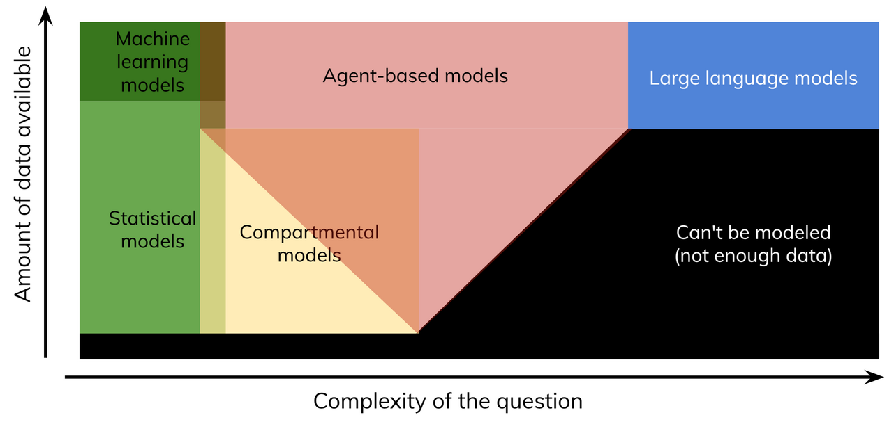

Starsim is a framework for modeling the spread of diseases: as deterministic or stochastic compartmental models, as metapopulation models across places, or as agents with dynamic transmission networks. A disease is written as its states and the transitions between them, as in a textbook model, and the same model then runs in any of these ways. Starsim also models several diseases at once and how they interact, non-infectious diseases, pregnancy and birth, interventions and how they are delivered, and fitting to data.
Starsim is available for both Python and R (see R-Starsim), and is fully open-source under the MIT license.
Kinds of model and tool
Mechanistic models of transmission differ in how they represent the population. Deterministic compartmental models follow the number of people in each compartment (susceptible, infectious, recovered, often stratified by age, sex, or place) as an ordinary differential equation (ODE): fast, smooth, and easy to fit, but with no chance in them. Stochastic compartmental models move whole numbers of people between the same compartments at random (a chain binomial, or the Gillespie algorithm), which captures fade-out and the variation between runs. Metapopulation models link compartmental models in many places by movement. Network and agent-based models (ABMs) follow individuals, with their own states, contacts, and histories: the most flexible, and the most costly to run and to check. The choice depends on the question: an ODE for the expected course of a large epidemic, a stochastic or agent-based model where chance, heterogeneity, or individual histories matter. For example, “Are vaccinated people less likely to be infected?” is a question for a statistical model; “What will prevalence be in 5 years with 100% vaccine uptake?” for a compartmental model; and “What will prevalence be in 5 years given realistic screening and vaccine coverage?” for agents.

Types of model
Tools differ as much in how a model is written: by hand in a general-purpose language (NumPy, deSolve), in a model language (odin), in configuration files (flepiMoP, Atomica), as a library of compartmental models (summer2, epydemix, MEmilio, SimInf), as a network or agent-based framework (EpiModel, LASER, EMOD, Mesa), or with statistical tools that fit mechanistic models to data (pomp, Stan). Models from many of these can be read into Starsim, and Starsim models written out to several (see Import and export); the lingua_franca repo has a model from each written both ways, with how their results and speed compare. If you are coming from Starsim 3, see the migration guide.
Where Starsim fits
Starsim’s distinctive feature is that one model runs in more than one of these ways. A disease declared as states and transitions (S >> I @ beta*I; see Writing models) is data that Starsim can read, so the same declaration runs as an ODE, as a stochastic compartmental model, or as agents, in one place or across several as a metapopulation. Starsim runs it as compartments unless something in it needs individuals, such as a contact network, and says which it chose; one argument overrides it (see Solvers and backends). So a model can start as an ODE, be fitted fast, and then run as agents to add a network or an intervention that targets individuals, without being written twice. What the declaration can’t express is added by a module written as code (Custom modules). The conceptual overview explains how this works.
Starsim’s design follows two principles: common tasks (defining parameters, running a sim, plotting results) should be simple, and custom tasks (a new vaccine, a new disease, a calibration function of your own) can’t always be simple, but should still be possible. If you’re modeling a complicated disease, some of that complexity is irreducible: Starsim’s job is to help where it can, then get out of the way and let you write your code. See Architecture for the full set.
Why use a framework?
A disease model is a few equations, so why not write them in Python or R yourself? For many models that is the right answer.
When your own code is enough
A single deterministic SIR model is about 15 lines of Python with SciPy. Here is the measles outbreak used throughout these docs, with β = 1.9 per day and 8 days infectious, in a town of 100,000 people:
import numpy as npfrom scipy.integrate import solve_ivpbeta, gamma, N =1.9, 1/8, 100_000defderiv(t, y): S, I, R = y infection = beta*S*I/N recovery = gamma*Ireturn [-infection, infection - recovery, recovery]days = np.arange(51)out =solve_ivp(deriv, [0, 50], [N -100, 100, 0], t_eval=days, rtol=1e-8)print('Most infectious at once:', round(out.y[1].max()))
import starsim as ssS, I, R = ss.states('S I R')measles = ss.Disease(S >> I @1.9*I, I >> R @ ss.days(8), init_n=dict(I=100))sim = ss.Sim(measles, total_pop=N, stop=ss.days(50), verbose=0).run()print('Most infectious at once:', round(sim.results.measles.I.max()))
Most infectious at once: 74112
library(starsim)N <-100000states("S I R")measles <-Disease(Transition(S, I, rate =1.9* I), Transition(I, R, dur =days(8)), init_n =list(I =100))sim <-Sim(measles, total_pop = N, stop =days(50), verbose =0)$run()cat("Most infectious at once:", round(max(sim$results$measles$I$values)), "\n")
S, I, R = ss.State(name='S'), ss.State(name='I'), ss.State(name='R')measles = ss.Disease(transitions= [ ss.Transition(source=S, dest=I, rate=ss.perday(1.9)*I, name='infection'), # β S I / N ss.Transition(source=I, dest=R, dur=ss.expon(mean=ss.days(8)), name='recovery'), # γ I, with γ = 1/8 ],init_n=dict(I=100), # 100 infectious at the start, and the rest susceptiblename='measles',)sim = ss.Sim(diseases= measles,networks= ss.contacts(1), # Everyone mixes with everyone, with one contact per person per daytotal_pop= N,start= ss.days(0),stop= ss.days(50),dt= ss.days(1),unit='day',solver='ode',verbose=0,)sim.run()print('Most infectious at once:', round(sim.results.measles.I.max()))
Most infectious at once: 74112
The two agree to within a couple of people. If this is the whole job (one model, run deterministically, read by you), the plain version is fine, as is deSolve or odin in R; Starsim is not faster than good code of your own for a model like this.
Where your own code starts to strain
A model rarely stays that small. These are the changes that tend to turn a short script into a long one, and what each takes in Starsim:
The model grows to need
In code of your own
In Starsim
Age groups with a contact matrix
Rewrite every equation as a vector, and the force of infection as a matrix product
sim.stratify(age=[0, 5, 15, 65]) and ss.contacts('Kenya') (Stratification)
A latent period that isn’t exponential
Add the right number of stages, and keep their rates consistent
describe(), equations(), diagram(), and R0() (Writing models)
None of these is hard on its own, but each touches the others (age groups change the force of infection, which changes what the vaccine acts on, which changes what the fit compares with data), and the bookkeeping is where the mistakes are. A rough guide: once a script is past about 100 lines, or needs calibration, more than one unit of time, or both a deterministic and a stochastic version, a framework is likely to save time.
Speed matters less for one small model than for many runs (fitting, uncertainty, scenario sweeps), for agents, and for large populations. Starsim runs compartmental models in compiled code, at the same cost whatever the size of the population, and steps agents with compiled passes over arrays; see Speed and scale.
Problems that are easy to miss
The hardest mistakes in a model are the ones that give plausible numbers. Each of the problems below was found while building Starsim, sometimes in Starsim itself, and each is now handled and tested:
The problem
How big it can be
What Starsim does
Competing exits drawn one after the other. Deaths are drawn among those infectious, and then recovery among the survivors, so whichever comes first in the code gets more people
Of the order of the rates times the step
Draws who leaves a state once, from the total rate, and then which way each person goes, in proportion to the rates
People infected during a step are given a whole step to recover at their first chance, rather than the half step they have on average
An SIR with 8 days infectious, in 8-day steps: an attack rate of 7% instead of 77% (the ODE gives 80%)
People who arrive in a state during a step face half a step of its exits
A step that is long for the disease. Someone infected in a step can’t infect anyone until the next one
Measles in daily steps peaks about 3 days late (see the conceptual overview)
Compartmental solvers take as many substeps as they need; agents get a note when the step is long, and sim.check_dt() measures the effect
Converting a probability between periods by dividing. An annual probability of 0.5 is not 0.5/12 a month
0.042 a month instead of 0.056; scaling the other way gives probabilities above 1
Probabilities, rates, and durations are typed, and converted through the rate
Losing the unit of time. A rate or duration becomes a bare number, and the unit is forgotten
A country’s contact matrix, in contacts a day, used 365 times too low in a model in years
Values carry their units, and arithmetic that mixes them wrongly raises an error
Scenarios that differ by chance. With one stream of random numbers, one extra draw in a scenario changes every draw after it
Differences between scenarios that the intervention didn’t cause, which need many more runs to average out
Common random numbers: each person’s draws stay the same between scenarios unless the scenario changes them
Compartments that go negative when the outflows in a step are larger than the compartment
Negative numbers of people, or runs that stop
In steps that are taken whole, outflows that would take more than everyone in a compartment are scaled down together; the stochastic solvers draw no more people than there are
Most of these errors are of the order of the rates times the step, so a model checked in daily steps can go wrong when run in weeks.
A framework is not a guarantee of correctness: the model’s structure, assumptions, and evidence are still yours to get right. Starsim takes the bookkeeping off your hands, and says what it assumed (sim.describe() lists every value it filled in itself).
Should I use Starsim?
Starsim suits modelers who write code (or are willing to), and is a good fit:
If your agent-based model is too slow, inflexible, or hard to use for your questions (a single run takes 14 hours, and every year you worry that your computing grant won’t be renewed).
If you model with compartments and want to try agents without months of learning a new tool: an mpox model asked to evaluate an individually targeted intervention can run as an ODE and as agents, and the two can be compared.
If you want to prototype a disease or network before adding it to your full model (you know and love your HIV model, but want to see what syphilis co-transmission, or a different MSM network, would do).
It may not be the best choice:
For one run of a simple SIR or SEIR model, where plain Python or R is enough (above).
If your team has a working model, highly specialized to its context, in another tool: the cost of switching may not be worth it. Starsim can import models from several frameworks (Import and export), so get in touch if this interests you.
For networks estimated from survey data with exponential random graph models (nodemix, gwesp): EpiModel. Starsim’s networks target degrees and matching.
For the fastest agent-based runs at national scale (tens of millions of agents): LASER, which is about 4 times faster on the England and Wales model.
For many small stochastic runs: odin and its companions, whose compiled models start slower but run faster.
For livestock in thousands of herds driven by a register of movements: SimInf.
For models built and used in spreadsheets, with budget optimization: Atomica.
For a full pipeline of hub scenario projections on a cluster: flepiMoP, which has the batch jobs and post-processing Starsim lacks.
For teaching with a graphical interface: NetLogo.
For estimating the reproduction number or forecasting from surveillance data, or for statistical models not about transmission: EpiNow2, the Epiverse packages, Stan, or PyMC.
Models and examples to start from
Models built with Starsim
Models built with Starsim are kept in their own repositories:
(If you’ve developed a model and want it included in this list, please get in touch.)
These models are inter-compatible: an HIV-TB coinfection model can combine the HIV module from STIsim and the TB module from TBsim.
The built-in library
Starsim also comes with a library of example diseases, networks, maternal-child health modules, and health economics, imported with import starsim.library as ssl. They are illustrative rather than validated, and meant to be copied and adapted.
The core of Starsim also includes the classic compartmental structures, ss.SIR, ss.SIS, and ss.SEIR (see Diseases).
Choosing a starting model
Start from the smallest model that represents the mechanism your question depends on. These pages are good starting points: